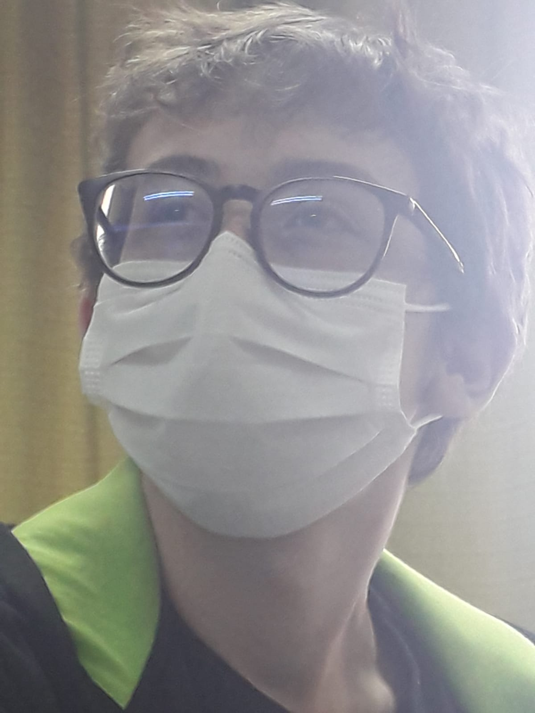

Home

Sobre mim:
Sou William, tenho 17 anos (2022), moro em Curitiba, nascido em Wenceslau Braz (Paraná), amo o lado de programação com o qual tenho contato e adoraria ter a chance de trabalhar com algo nesta área.
Coisas boas
- Tenho grande facilidade em me comunicar com outras pessoas.
- Consigo me adaptar rapidamente ao meu local de trabalho.
- Sempre tento não me incluir em qualquer briga interpessoal.
- Em trabalho em equipe me comunico e trabalho bem.
- Se sinto que existe algo errado no trabalho que faço sou simples de expressar este problema.
- Aceito criticas sem ressentimentos mas como algo produtivo.
Coisas ruins
- Considerado cético por muitos
- Considerado muito ironico por pessoas perto de mim